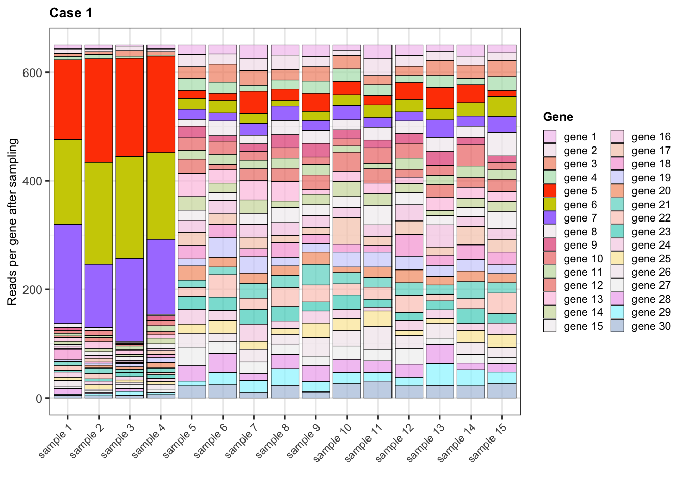

Normalization is a critical processing step in RNA-seq data analysis. By normalizing raw read counts generated through transcriptomics assays, we reduce the effects that technical within- and between-samples differences have on the data, making the expression measurements more comparable across genes and samples for the study of transcriptome dynamics.
Varying sequencing depth in the samples is usually accounted for in normalization methods, where gene counts are scaled by sample library size (i.e. total sum of read counts per sample). This consideration is necessary when comparing expression across samples, but is not the only factor at play, specially when the samples are expected to have very diverse transcriptomes between experimental conditions.
In a pioneer paper of 2010, Mark D. Robinson and Alicia Oshlack introduced the issue of the RNA composition bias in RNA-seq data, and developed the Trimmed Mean of M-values (TMM) method to adjust for it (Robinson and Oshlack 2010). As a widely-implemented normalization scheme, it is important to understand why the RNA population of the samples is a concern for normalization and how TMM accounts for it.
What you’ll learn here
Visualize how RNA-seq gene expression estimates result from sampling effects and the implications of it in downstream differential gene expression (DGE) analysis.
Understand the RNA composition bias: visualize how highly-expressed genes specific to one condition increase the false positive rate in DGE.
Learn how the TMM method works to eliminate the RNA composition bias.
RNA-seq counts: a sampling artifact?
Let’s imagine a simple scenario with 15 samples across 3 experimental conditions (A, B, and C), each containing all the transcripts expressed from 30 genes with the same length. Suppose all transcripts in each sample are sequenced, without restricting the number of sequenced molecules per library. This artificial scenario would result in sequencing reads for all transcripts per gene, thus serving as estimates of true expression values.
Of the 15 genes, 12 have similar expression levels in all 3 conditions, and 3 are highly-expressed in condition A only (genes 5, 6, and 7).
Caution
The number of reads mapping to a given gene depends on gene expression (number of gene transcripts), but also gene length: larger genes will have more mapping reads. Thus, read counts are not direct estimations of gene expression. In this example, however, we assumed all genes have the same length so we are supposing reads counts reflect expression.
Below, we create a matrix of these raw read counts (ranging from 10 to 100) for all 30 genes across the 15 samples. Then, we introduce the 3 highly-expressed genes (counts from 1,000 to 2,000) in condition A only.
What’s clear from the heat map of raw counts is that, by design, genes 5, 6, and 7 are more highly-expressed in condition A than in B and C, whereas the rest of genes don’t seem to present changes in their expression between conditions. Let’s formally assess if the differences in the mean expression of all genes in A vs B, A vs C, and B vs C, are statisitcally significant with two sample t-tests.
library(reshape2)library(ggplot2)library(ggrepel)## Create matrices to save gene p-values and t-statspvals <-matrix(data =NA, nrow =nrow(expr), ncol =3)tstats <-matrix(data =NA, nrow =nrow(expr), ncol =3)colnames(pvals) <-colnames(tstats) <-c("A_vs_B", "A_vs_C", "B_vs_C")rownames(pvals) <-rownames(tstats) <-paste0("gene", 1:30)## Iterate over genesfor(i in1:nrow(expr)){## t-test for gene expr in condition1 vs condition2for(condition_pair inlist(c("A", "B"), c("A", "C"), c("B", "C"))){ comparison <-paste0(condition_pair[1], "_vs_", condition_pair[2]) gene <-paste0("gene", i) gene_expr <- expr[i, colnames(expr) %in% condition_pair] formula <- gene_expr ~ Condition results <-t.test(formula = formula, data =data.frame("Condition"= conditions[conditions %in% condition_pair])) pvals[gene, comparison] <- results$p.value tstats[gene, comparison] <- results$statistic }}## Plot t-stats (expression change size)melted_pvals =melt(pvals)melted_tstats =melt(tstats)data =cbind(melted_pvals, melted_tstats$value)colnames(data) <-c("gene", "comparison", "p", "t")data$signif <-sapply(data$p, function(p){ if(p<0.05){"*"} else{NA}})ggplot(data, aes(x = gene, y = t, fill = comparison, color = comparison)) +geom_bar(stat ="identity", position="dodge", colour ="black", width =0.65, linewidth =0.3) +geom_text(aes(x = gene, y = t + ((sign(t))*0.5), label = signif, group = comparison, color = comparison), position =position_dodge(0.9), hjust =0.5,show.legend = F) +theme_bw() +labs(x ="", y ="Change in expression", fill ="Comparison") +scale_fill_manual(values =c("A_vs_B"="#8DB6CD", "A_vs_C"="#FF82AB", "B_vs_C"="#A2CD5A"), labels =c("A vs B", "A vs C", "B vs C")) +scale_color_manual(values =c("A_vs_B"="#8DB6CD", "A_vs_C"="#FF82AB", "B_vs_C"="#A2CD5A")) +theme(axis.text.x =element_text(size =6, angle =45, hjust =1), axis.title.y =element_text(size =8), axis.text.y =element_text(size =6), legend.title =element_text(face ="bold", size =7), legend.text =element_text(size =6), legend.key.width =unit(0.3, "cm"),legend.key.height =unit(0.3, "cm"))
In the above figure we are plotting the t-statistics per gene for each comparison, which capture the sign and size of the difference in gene expression between conditions; those expression changes that were significant (p-value <0.05) have a “*” above the bar. Not surprisingly, genes 5, 6, and 7 have significantly higher expression in A compared to the other two conditions, and the rest of the genes don’t show significant expression changes except for the false positive gene 3 in B vs C.
Something evident but worth showing is that the sizes of the “true” libraries we just generated, vary considerably between samples. Specially samples in condition A have much greater libraries because of the three genes with high expression.
The differences in total expression between samples wouldn’t represent a major issue if we had the capacity to sequence all molecules present in each sample, just as we have been assuming. But in reality, in RNA-sequencing experiments we have a fixed number of reads per library, meaning not all molecules can be sequenced in each sample but there’s a sampling of molecules from which reads are generated. Think of it as having the pool of reads for all transcripts expressed in a sample, and having to randomly select a given number of them.
The RNA composition bias
The sampling of molecules introduces a proportionality problem in the RNA-seq count data: in those samples with more highly-expressed genes (and thus more transcripts), a higher proportion of reads will come from such genes, taking away reads for all the other genes and apparently reducing their expression, as depicted in the pre. This is known as the RNA composition or population bias. Therefore, we need to account for the proportion of reads mapping to each gene after “sampling”.
In the next code we randomly select 1000 reads per sample and plot the proportion that correspond to each gene per sample.
library(Polychrome)## Create pool of reads per gene in each samplecolnames(expr) <- library_sizes$samplereads_per_gene_per_sample <-apply(expr, 2, function(sample) {rep(rownames(expr), sample)})## Randomly select 1000 reads per sampleset.seed(12242024)reads_sample <-lapply(reads_per_gene_per_sample, function(sample) {sample(sample, size =1000, replace =FALSE)})## Read counts per gene after samplingrna_seq_expr <-lapply(reads_sample, function(sample){table(sample)[rownames(expr)]})rna_seq_expr <-do.call(cbind, lapply(reads_sample, table))rna_seq_expr <- rna_seq_expr[rownames(expr), ]rna_seq_expr_melted <-melt(rna_seq_expr)colnames(rna_seq_expr_melted) <-c("gene", "sample", "count")rna_seq_expr_melted <-merge(rna_seq_expr_melted, library_sizes[, c("sample", "Condition")], by ="sample")## Order genes for plottingrna_seq_expr_melted$gene <-factor(rna_seq_expr_melted$gene, levels =paste("gene", 1:30))## Color palette for genesset.seed(12212024)col_palette <-sample(c(hcl.colors(30, palette ="Pastel 1"), hcl.colors(30, palette ="PinkYl"),hcl.colors(30, palette ="Cyan-Magenta")), 30, replace = F)names(col_palette) <-rownames(expr)col_palette[paste("gene", 5:7)] <-c("orangered", "yellow3", "mediumpurple1")## Bar plotggplot(data = rna_seq_expr_melted, aes(x = sample, y = count, fill = gene, alpha = gene)) +geom_bar(stat ="identity", colour ="black", linewidth =0.2) +theme_bw() +labs(x ="", y ="Read per gene after sampling", fill ="Gene") +scale_fill_manual(values = col_palette) +scale_alpha_manual(values =rep(c(0.7, 1, 0.7), c(4, 3, 23))) +guides(alpha ="none") +theme(axis.text.x =element_text(size =8, angle =45, hjust =1), legend.title =element_text(face ="bold", size =10), legend.text =element_text(size =8), legend.key.width =unit(0.35, "cm"),legend.key.height =unit(0.35, "cm"))

Clearly, in samples 1-4 of condition A most of the reads go to the highly-expressed genes 5, 6, and 7, and the read counts for the rest of genes are decreased, compared to the other samples with similar read proportions across genes. In the following heat map of counts after sampling, note the reduced expression of all non highly-expressed expressed genes in condition A, while maintaining similar low expression levels for all genes in conditions B and C.
As you may suspect, the decrease in the counts of genes in condition A caused by smaller proportions of reads for these genes, yield to false discoveries of differential expression.
## Matrices to save gene p-values and t-statspvals <-matrix(data =NA, nrow =nrow(rna_seq_expr), ncol =3)tstats <-matrix(data =NA, nrow =nrow(rna_seq_expr), ncol =3)colnames(pvals) <-colnames(tstats) <-c("A_vs_B", "A_vs_C", "B_vs_C")rownames(pvals) <-rownames(tstats) <-paste0("gene", 1:30)## Iterate over genesfor(i in1:nrow(rna_seq_expr)){## t-test for gene expr in condition1 vs condition2for(condition_pair inlist(c("A", "B"), c("A", "C"), c("B", "C"))){ comparison <-paste0(condition_pair[1], "_vs_", condition_pair[2]) gene <-paste0("gene", i) gene_expr <- rna_seq_expr[i, colnames(rna_seq_expr) %in% condition_pair] formula <- gene_expr ~ Condition results <-t.test(formula = formula, data =data.frame("Condition"= conditions[conditions %in% condition_pair])) pvals[gene, comparison] <- results$p.value tstats[gene, comparison] <- results$statistic }}## Plot t-stats melted_pvals =melt(pvals)melted_tstats =melt(tstats)data =cbind(melted_pvals, melted_tstats$value)colnames(data) <-c("gene", "comparison", "p", "t")data$signif <-sapply(data$p, function(p){ if(p<0.05){"*"} else{NA}})ggplot(data, aes(x = gene, y = t, fill = comparison, color = comparison)) +geom_bar(stat ="identity", position="dodge", colour ="black", width =0.65, linewidth =0.3) +geom_text(aes(x = gene, y = t + (sign(t)), label = signif, group = comparison, color = comparison), position =position_dodge(0.9), hjust =0.5,show.legend = F) +theme_bw() +labs(x ="", y ="Change in expression", fill ="Comparison") +scale_fill_manual(values =c("A_vs_B"="#8DB6CD", "A_vs_C"="#FF82AB", "B_vs_C"="#A2CD5A"), labels =c("A vs B", "A vs C", "B vs C")) +scale_color_manual(values =c("A_vs_B"="#8DB6CD", "A_vs_C"="#FF82AB", "B_vs_C"="#A2CD5A")) +theme(axis.text.x =element_text(size =6, angle =45, hjust =1), axis.title.y =element_text(size =8), axis.text.y =element_text(size =6), legend.title =element_text(face ="bold", size =7), legend.text =element_text(size =6), legend.key.width =unit(0.3, "cm"),legend.key.height =unit(0.3, "cm"))
Conclusion
More read counts for a gene can also be caused by greater lengths, not only by its high expression.
References
Robinson, Mark D, and Alicia Oshlack. 2010. “A Scaling Normalization Method for Differential Expression Analysis of RNA-Seq Data.”Genome Biology 11 (3). https://doi.org/10.1186/gb-2010-11-3-r25.